Chapter 5 Demographics
How do the demographics of participants correlate with donation behavior? Much of these questions have been previously asked in relation to charitable donations, hopefully our results match these.
5.1 Patient Gender
Not a demographic variable, but important to see before setting up congruence effects.
trials %>%
ggplot(aes(cond_sex, donation)) + itheme +
geom_errorbars +
coord_cartesian(ylim = c(20, 30))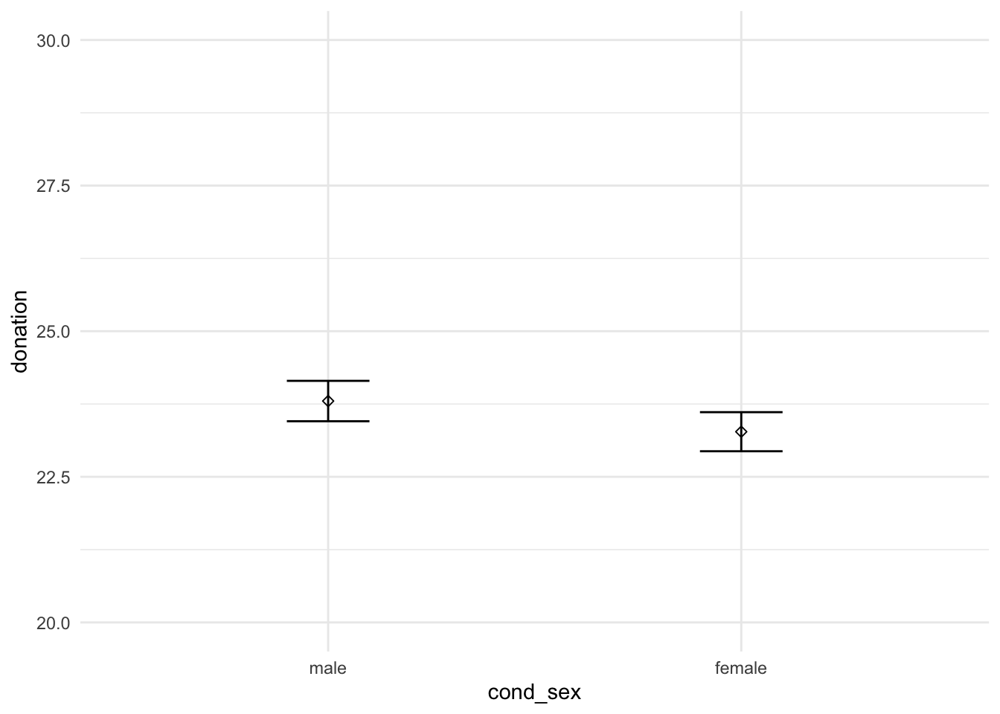
model_sex_base = lm(update(base.formula, donation ~ . - cond_sex), data = trials)
model_sex_full = lm(update(base.formula, donation ~ .), data = trials)
compare_lm(model_sex_base, model_sex_full)## Analysis of Variance Table
##
## Model 1: donation ~ self_cancer + ff_cancer + gender + education + socioeconomic +
## past_donations.z + age.z
## Model 2: donation ~ cond_sex + self_cancer + ff_cancer + gender + education +
## socioeconomic + past_donations.z + age.z
## Res.Df RSS Df Sum of Sq Pr(>Chi)
## 1 4478 1145771
## 2 4477 1145461 1 309.9 0.2711
## Chisq Stat: 1.218
## NULL5.2 Gender
NH: Men and women donate the same amounts on average
# a = trials %>%
# filter(gender %in% c("M", "F")) %>%
# ggplot(aes(gender, donation)) + ptheme +
# labs(title = "Participant Gender and Donations\n") +
# stat_summary(fun.data = mean_se, geom = "errorbar", position = position_dodge(width = 0.35), width = 0.2) +
# stat_summary(fun.data = mean_se, geom = "point", shape = 5, position = position_dodge(width = 0.35)) +
# scale_x_discrete(labels = c("M" = "Male\n", "F" = "Female\n")) +
# scale_y_continuous(labels = scales::dollar) +
# coord_cartesian(ylim = c(20, 30)) +
# scale_color_brewer(palette = "Set1") +
# labs(x = element_blank(), y = "Donation") +
# geom_signif(comparisons = list(c("M", "F")),
# y_position = 26.7,
# tip_length = 0.01,
# textsize = 2.75,
# annotations = "list({\U03C7^2}(1) == 3.8, ~~ p < 0.06)",
# parse = T)
#
# amodel_gender_base = lm(update(base.formula, donation ~ . - gender),
data = filter(trials, gender %in% c("M", "F")))
model_gender_full = lm(update(base.formula, donation ~ .),
data = filter(trials, gender %in% c("M", "F")))
compare_lm(model_gender_base, model_gender_full)## Analysis of Variance Table
##
## Model 1: donation ~ cond_sex + self_cancer + ff_cancer + education + socioeconomic +
## past_donations.z + age.z
## Model 2: donation ~ cond_sex + self_cancer + ff_cancer + gender + education +
## socioeconomic + past_donations.z + age.z
## Res.Df RSS Df Sum of Sq Pr(>Chi)
## 1 4443 1136858
## 2 4442 1135865 1 993.6 0.0487 *
## ---
## Signif. codes: 0 '***' 0.001 '**' 0.01 '*' 0.05 '.' 0.1 ' ' 1
## Chisq Stat: 3.904
## NULL
## MODEL INFO:
## Observations: 4465
## Dependent Variable: donation
## Type: OLS linear regression
##
## MODEL FIT:
## F(22,4442) = 5.381, p = 0.000
## R² = 0.026
## Adj. R² = 0.021
##
## Standard errors: OLS
## ------------------------------------------------------------------------
## Est. 2.5% 97.5% t val. p
## --------------------------- -------- --------- -------- -------- -------
## (Intercept) 22.984 16.471 29.496 6.919 0.000
## cond_sexfemale -0.521 -1.463 0.420 -1.086 0.277
## self_cancerY 4.237 1.928 6.546 3.597 0.000
## self_cancerOO 5.662 0.676 10.647 2.226 0.026
## ff_cancerY 1.814 0.795 2.833 3.490 0.000
## ff_cancerOO 3.168 -0.554 6.890 1.669 0.095
## genderF 0.965 0.005 1.924 1.971 0.049
## educationHS -2.565 -9.061 3.931 -0.774 0.439
## educationA -2.453 -9.037 4.130 -0.731 0.465
## educationB -1.338 -7.819 5.142 -0.405 0.686
## educationM 0.372 -6.208 6.952 0.111 0.912
## educationP -1.024 -8.089 6.041 -0.284 0.776
## educationD -2.394 -9.692 4.904 -0.643 0.520
## educationOO -2.290 -12.940 8.360 -0.422 0.673
## socioeconomic10-25k -0.799 -2.592 0.994 -0.874 0.382
## socioeconomic25-50k 0.140 -1.492 1.772 0.168 0.866
## socioeconomic50-75k 0.968 -0.762 2.699 1.097 0.273
## socioeconomic75-100k 1.990 0.007 3.972 1.967 0.049
## socioeconomic100-150k 0.884 -1.394 3.162 0.761 0.447
## socioeconomic>150k 1.504 -1.671 4.679 0.929 0.353
## socioeconomicOO -2.164 -5.460 1.132 -1.287 0.198
## past_donations.z 2.620 1.664 3.575 5.375 0.000
## age.z -0.515 -1.507 0.477 -1.018 0.309
## ------------------------------------------------------------------------Gender has a signficant relationship to donation amount (Chisq = 3.9, p < 0.05), with females donating about $0.97 more than males.
NH: Men and women donate the same amounts regardless of the family of metaphor they were exposed to
g = trials %>%
filter(gender %in% c("M", "F")) %>%
ggplot(aes(cond_metaphor, donation, color = gender)) + itheme +
labs(title = "Interaction between Metaphor and Participant Gender") +
geom_errorbars +
scale_y_continuous(labels = scales::dollar) +
scale_x_discrete(expand = c(0, 1.5)) +
coord_cartesian(ylim = c(20, 30)) +
labs(x = "Metaphor Condition", y = "Donation")
# ggsave("gender_metaphor.png", g, width = 7, height = 3)
g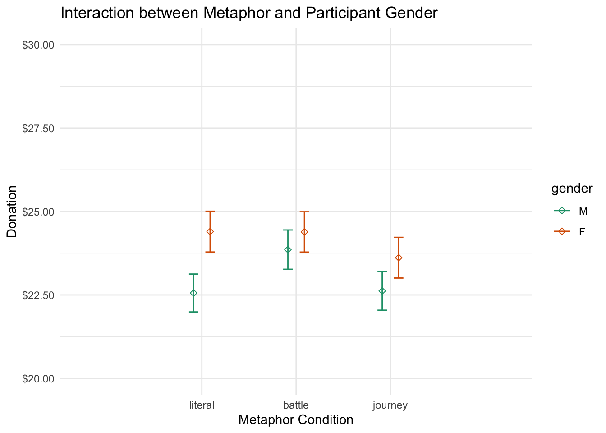
model_gender_base = lm(update(base.formula, donation ~ . + cond_metaphor - gender),
data = filter(trials, gender %in% c("M", "F")))
model_gender_mid = lm(update(base.formula, donation ~ . + cond_metaphor),
data = filter(trials, gender %in% c("M", "F")))
model_gender_full = lm(update(base.formula, donation ~ . + cond_metaphor * gender),
data = filter(trials, gender %in% c("M", "F")))
compare_lm(model_gender_base, model_gender_mid)## Analysis of Variance Table
##
## Model 1: donation ~ cond_sex + self_cancer + ff_cancer + education + socioeconomic +
## past_donations.z + age.z + cond_metaphor
## Model 2: donation ~ cond_sex + self_cancer + ff_cancer + gender + education +
## socioeconomic + past_donations.z + age.z + cond_metaphor
## Res.Df RSS Df Sum of Sq Pr(>Chi)
## 1 4441 1135876
## 2 4440 1134901 1 974.87 0.05083 .
## ---
## Signif. codes: 0 '***' 0.001 '**' 0.01 '*' 0.05 '.' 0.1 ' ' 1
## Chisq Stat: 3.834
## NULL
## MODEL INFO:
## Observations: 4465
## Dependent Variable: donation
## Type: OLS linear regression
##
## MODEL FIT:
## F(24,4440) = 5.091, p = 0.000
## R² = 0.027
## Adj. R² = 0.022
##
## Standard errors: OLS
## ------------------------------------------------------------------------
## Est. 2.5% 97.5% t val. p
## --------------------------- -------- --------- -------- -------- -------
## (Intercept) 22.930 16.384 29.475 6.868 0.000
## cond_sexfemale -0.500 -1.441 0.441 -1.041 0.298
## self_cancerY 4.287 1.977 6.597 3.639 0.000
## self_cancerOO 5.595 0.610 10.581 2.200 0.028
## ff_cancerY 1.835 0.816 2.855 3.530 0.000
## ff_cancerOO 3.142 -0.581 6.865 1.655 0.098
## genderF 0.955 -0.004 1.915 1.953 0.051
## educationHS -2.655 -9.151 3.840 -0.801 0.423
## educationA -2.554 -9.137 4.029 -0.761 0.447
## educationB -1.408 -7.887 5.072 -0.426 0.670
## educationM 0.312 -6.268 6.891 0.093 0.926
## educationP -1.079 -8.143 5.986 -0.299 0.765
## educationD -2.455 -9.752 4.842 -0.660 0.509
## educationOO -2.611 -13.264 8.042 -0.481 0.631
## socioeconomic10-25k -0.771 -2.564 1.023 -0.842 0.400
## socioeconomic25-50k 0.160 -1.472 1.792 0.192 0.847
## socioeconomic50-75k 0.991 -0.739 2.722 1.123 0.262
## socioeconomic75-100k 1.991 0.008 3.973 1.969 0.049
## socioeconomic100-150k 0.914 -1.363 3.192 0.787 0.431
## socioeconomic>150k 1.615 -1.563 4.793 0.996 0.319
## socioeconomicOO -2.171 -5.467 1.125 -1.291 0.197
## past_donations.z 2.608 1.653 3.564 5.352 0.000
## age.z -0.537 -1.529 0.455 -1.061 0.289
## cond_metaphorbattle 0.703 -0.446 1.852 1.200 0.230
## cond_metaphorjourney -0.433 -1.582 0.717 -0.738 0.460
## ------------------------------------------------------------------------compare_lm(model_gender_mid, model_gender_full)## Analysis of Variance Table
##
## Model 1: donation ~ cond_sex + self_cancer + ff_cancer + gender + education +
## socioeconomic + past_donations.z + age.z + cond_metaphor
## Model 2: donation ~ cond_sex + self_cancer + ff_cancer + gender + education +
## socioeconomic + past_donations.z + age.z + cond_metaphor +
## gender:cond_metaphor
## Res.Df RSS Df Sum of Sq Pr(>Chi)
## 1 4440 1134901
## 2 4438 1134398 2 502.92 0.3739
## Chisq Stat: 1.979
## NULLGender marginally significantly (p < 0.06) predicts donation conditional on metaphor condition, however there is no interaction between gender and metaphor.
3-way interaction going on between ppt gender, metaphor, and patient gender.
trials %>%
filter(gender %in% c("M", "F")) %>%
mutate(gender = factor(gender)) %>% # to recode the levels of the variable
with(print_crosstabs(ftable(cond_metaphor, cond_sex, gender)))## gender M F
## cond_metaphor cond_sex
## literal male 400 339
## female 407 371
## battle male 395 343
## female 371 364
## journey male 379 321
## female 408 367
##
## gender M F
## cond_metaphor cond_sex
## literal male 0.090 0.076
## female 0.091 0.083
## battle male 0.088 0.077
## female 0.083 0.082
## journey male 0.085 0.072
## female 0.091 0.082trials %>%
filter(gender %in% c("M", "F")) %>%
ggplot(aes(cond_metaphor, donation, color = gender)) + itheme +
geom_errorbars +
labs(x = "Metaphor condition",
y = "Donation",
title = "Donation by metaphor, sex, and participent gender") +
facet_grid(~cond_sex) +
coord_cartesian(ylim = c(20, 30))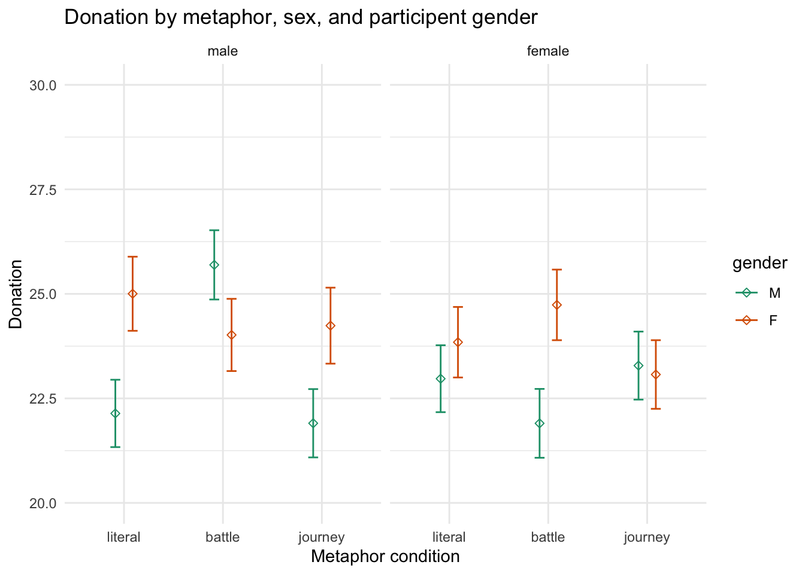
m1 = lm(data = trials, update(base.formula, donation ~ . + cond_metaphor*cond_sex*gender))
m2 = lm(data = trials, update(base.formula, donation ~ . + cond_metaphor*cond_sex*gender))There appears to be a difference between some of these factors (male and female participants exposed to the female battle condition and the male literal condition), although they could be suprious at this level of factorization.
Male stereotype - males changed on battle
5.3 Gender Congruency Effects
print_crosstabs(ftable(trials$cond_metaphor, trials$congruency))## congruent incongruent
##
## literal 771 760
## battle 759 724
## journey 746 742
##
## congruent incongruent
##
## literal 0.171 0.169
## battle 0.169 0.161
## journey 0.166 0.165trials %>%
ggplot(aes(congruency, donation)) + itheme +
geom_errorbars +
labs(x = "Congruency", y = "Donation", title = "Donation by gender congruence") +
coord_cartesian(ylim=c(20, 30))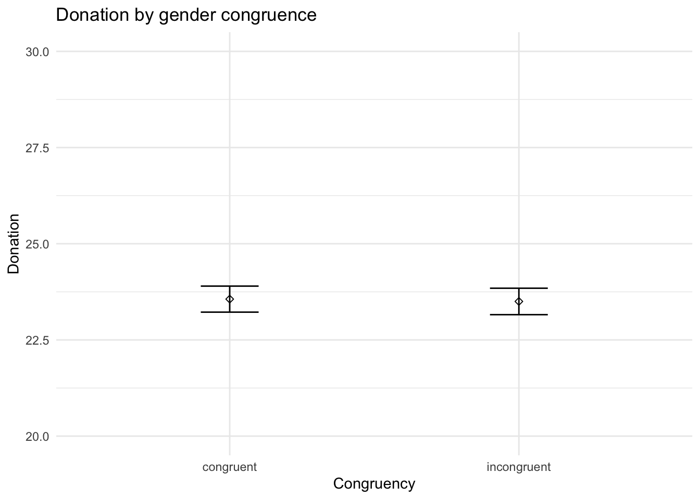
trials %>%
ggplot(aes(cond_metaphor, donation, color = congruency)) + itheme +
geom_errorbars +
labs(x = "Congruency", y = "Donation", title = "Donation by gender congruence and metaphor") +
coord_cartesian(ylim=c(19, 29))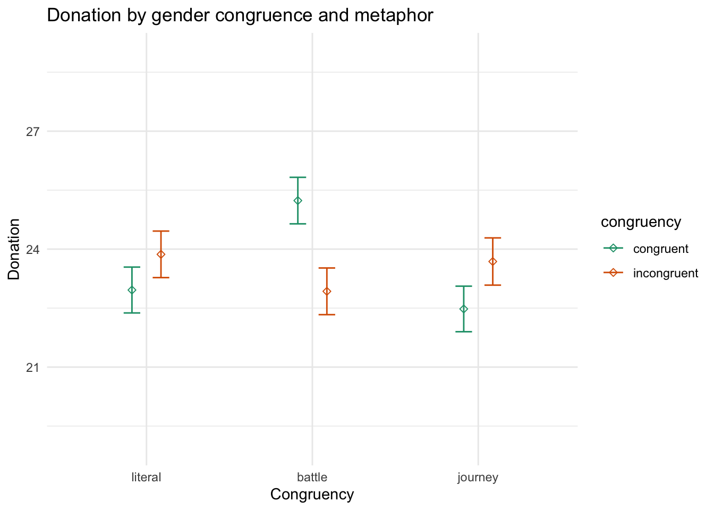
NH: Gender identity congruence for males and females does not affect donations
model_congruent_base = lm(update(base.formula, donation ~ .),
data = trials)
model_congruent_full = lm(update(base.formula, donation ~ . + congruency),
data = trials)
compare_lm(model_congruent_base, model_congruent_full)## Analysis of Variance Table
##
## Model 1: donation ~ cond_sex + self_cancer + ff_cancer + gender + education +
## socioeconomic + past_donations.z + age.z
## Model 2: donation ~ cond_sex + self_cancer + ff_cancer + gender + education +
## socioeconomic + past_donations.z + age.z + congruency
## Res.Df RSS Df Sum of Sq Pr(>Chi)
## 1 4477 1145461
## 2 4476 1145445 1 15.954 0.8028
## Chisq Stat: 0.063
## NULLNH: Gender identity congruence for males and females does not affect donations conditional on metaphor
model_congruent_base = lm(update(base.formula, donation ~ . + cond_metaphor),
data = trials)
model_congruent_mid = lm(update(base.formula, donation ~ . + cond_metaphor + congruency),
data = trials)
model_congruent_full = lm(update(base.formula, donation ~ . + cond_metaphor * congruency),
data = trials)
compare_lm(model_congruent_base, model_congruent_mid)## Analysis of Variance Table
##
## Model 1: donation ~ cond_sex + self_cancer + ff_cancer + gender + education +
## socioeconomic + past_donations.z + age.z + cond_metaphor
## Model 2: donation ~ cond_sex + self_cancer + ff_cancer + gender + education +
## socioeconomic + past_donations.z + age.z + cond_metaphor +
## congruency
## Res.Df RSS Df Sum of Sq Pr(>Chi)
## 1 4475 1144489
## 2 4474 1144471 1 17.55 0.7934
## Chisq Stat: 0.069
## NULLcompare_lm(model_congruent_mid, model_congruent_full)## Analysis of Variance Table
##
## Model 1: donation ~ cond_sex + self_cancer + ff_cancer + gender + education +
## socioeconomic + past_donations.z + age.z + cond_metaphor +
## congruency
## Model 2: donation ~ cond_sex + self_cancer + ff_cancer + gender + education +
## socioeconomic + past_donations.z + age.z + cond_metaphor +
## congruency + cond_metaphor:congruency
## Res.Df RSS Df Sum of Sq Pr(>Chi)
## 1 4474 1144471
## 2 4472 1141351 2 3120.4 0.002214 **
## ---
## Signif. codes: 0 '***' 0.001 '**' 0.01 '*' 0.05 '.' 0.1 ' ' 1
## Chisq Stat: 12.291
## NULL
## MODEL INFO:
## Observations: 4502
## Dependent Variable: donation
## Type: OLS linear regression
##
## MODEL FIT:
## F(29,4472) = 4.923, p = 0.000
## R² = 0.031
## Adj. R² = 0.025
##
## Standard errors: OLS
## ----------------------------------------------------------------------------
## Est. 2.5% 97.5%
## ------------------------------------------------ -------- --------- --------
## (Intercept) 23.143 16.687 29.600
## cond_sexfemale -0.534 -1.473 0.404
## self_cancerY 4.448 2.145 6.751
## self_cancerOO 5.208 0.234 10.183
## ff_cancerY 1.898 0.883 2.913
## ff_cancerOO 4.151 0.515 7.787
## genderF 0.979 0.021 1.938
## genderNB 2.071 -4.274 8.415
## genderOO -3.085 -12.774 6.604
## educationHS -3.530 -9.898 2.838
## educationA -3.555 -10.009 2.899
## educationB -2.278 -8.630 4.075
## educationM -0.489 -6.941 5.963
## educationP -1.847 -8.795 5.102
## educationD -3.225 -10.408 3.958
## educationOO -4.161 -14.133 5.810
## socioeconomic10-25k -0.758 -2.540 1.024
## socioeconomic25-50k 0.246 -1.373 1.865
## socioeconomic50-75k 0.960 -0.762 2.681
## socioeconomic75-100k 2.008 0.034 3.983
## socioeconomic100-150k 0.900 -1.371 3.170
## socioeconomic>150k 1.672 -1.501 4.845
## socioeconomicOO -2.358 -5.595 0.879
## past_donations.z 2.638 1.686 3.591
## age.z -0.516 -1.504 0.472
## cond_metaphorbattle 2.387 0.783 3.991
## cond_metaphorjourney -0.553 -2.166 1.060
## congruencyincongruent 1.180 -0.428 2.787
## cond_metaphorbattle:congruencyincongruent -3.429 -5.716 -1.142
## cond_metaphorjourney:congruencyincongruent 0.234 -2.051 2.520
## ----------------------------------------------------------------------------
##
## -----------------------------------------------------------------
## t val. p
## ------------------------------------------------ -------- -------
## (Intercept) 7.027 0.000
## cond_sexfemale -1.116 0.265
## self_cancerY 3.786 0.000
## self_cancerOO 2.053 0.040
## ff_cancerY 3.665 0.000
## ff_cancerOO 2.238 0.025
## genderF 2.003 0.045
## genderNB 0.640 0.522
## genderOO -0.624 0.533
## educationHS -1.087 0.277
## educationA -1.080 0.280
## educationB -0.703 0.482
## educationM -0.149 0.882
## educationP -0.521 0.602
## educationD -0.880 0.379
## educationOO -0.818 0.413
## socioeconomic10-25k -0.834 0.404
## socioeconomic25-50k 0.298 0.766
## socioeconomic50-75k 1.093 0.275
## socioeconomic75-100k 1.994 0.046
## socioeconomic100-150k 0.777 0.437
## socioeconomic>150k 1.033 0.302
## socioeconomicOO -1.428 0.153
## past_donations.z 5.431 0.000
## age.z -1.024 0.306
## cond_metaphorbattle 2.918 0.004
## cond_metaphorjourney -0.672 0.502
## congruencyincongruent 1.438 0.150
## cond_metaphorbattle:congruencyincongruent -2.939 0.003
## cond_metaphorjourney:congruencyincongruent 0.201 0.841
## -----------------------------------------------------------------5.3.1 Gender Congruence on Sympathy
trials %>%
ggplot(aes(cond_metaphor, sympathy, color = congruency)) + itheme +
geom_errorbars +
coord_cartesian(ylim = c(4.5, 6))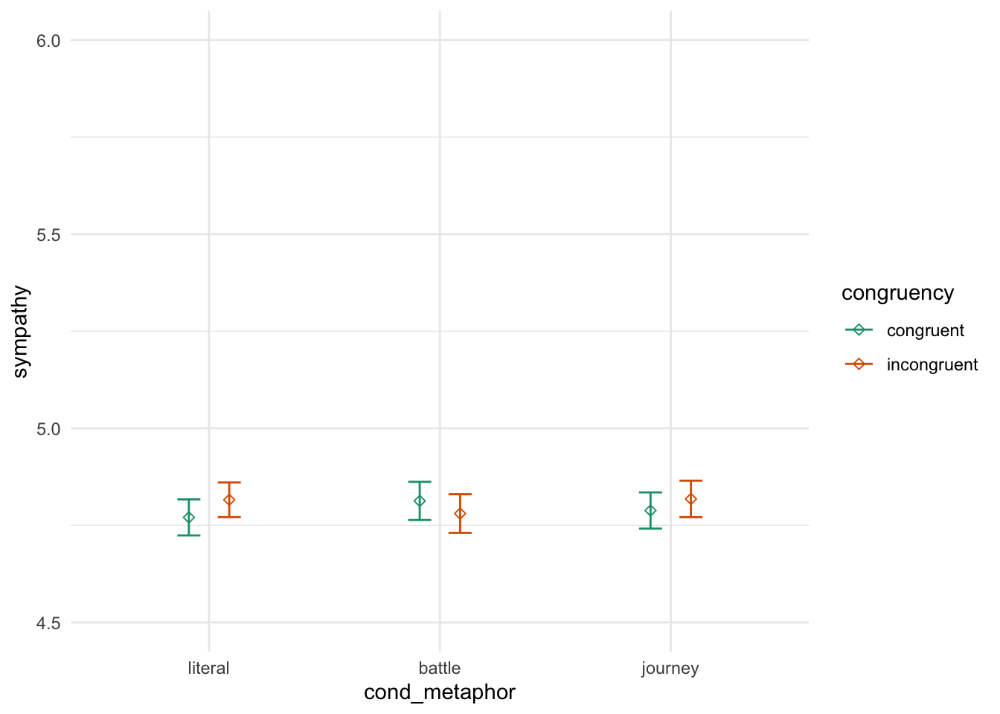
model_congruent_base = lm(update(base.formula, sympathy ~ . + cond_metaphor),
data = trials)
model_congruent_mid = lm(update(base.formula, sympathy ~ . + cond_metaphor + congruency),
data = trials)
model_congruent_full = lm(update(base.formula, sympathy ~ . + cond_metaphor * congruency),
data = trials)
compare_lm(model_congruent_base, model_congruent_mid)## Analysis of Variance Table
##
## Model 1: sympathy ~ cond_sex + self_cancer + ff_cancer + gender + education +
## socioeconomic + past_donations.z + age.z + cond_metaphor
## Model 2: sympathy ~ cond_sex + self_cancer + ff_cancer + gender + education +
## socioeconomic + past_donations.z + age.z + cond_metaphor +
## congruency
## Res.Df RSS Df Sum of Sq Pr(>Chi)
## 1 4475 7274.0
## 2 4474 7273.2 1 0.82915 0.4751
## Chisq Stat: 0.513
## NULLcompare_lm(model_congruent_mid, model_congruent_full)## Analysis of Variance Table
##
## Model 1: sympathy ~ cond_sex + self_cancer + ff_cancer + gender + education +
## socioeconomic + past_donations.z + age.z + cond_metaphor +
## congruency
## Model 2: sympathy ~ cond_sex + self_cancer + ff_cancer + gender + education +
## socioeconomic + past_donations.z + age.z + cond_metaphor +
## congruency + cond_metaphor:congruency
## Res.Df RSS Df Sum of Sq Pr(>Chi)
## 1 4474 7273.2
## 2 4472 7271.2 2 1.9278 0.5528
## Chisq Stat: 1.193
## NULLGender congruence does not have a significant linear relationship with perceived sympathy beyond the metaphor condition.
5.3.2 Gender Congruence on Urgency
trials %>%
ggplot(aes(cond_metaphor, urgent, color = congruency)) + itheme +
geom_errorbars +
coord_cartesian(ylim = c(4, 6))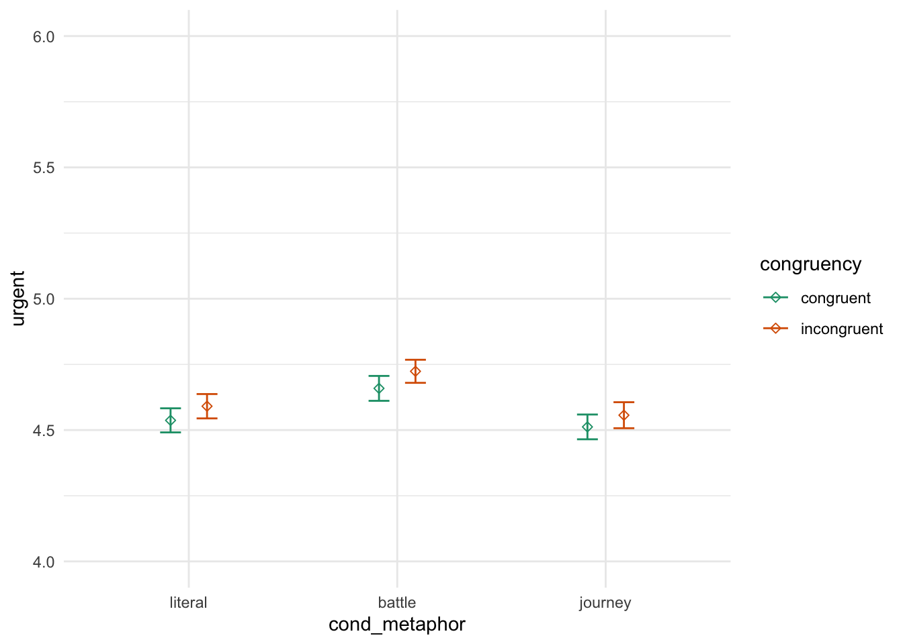
model_congruent_base = lm(update(base.formula, urgent ~ . + cond_metaphor),
data = trials)
model_congruent_mid = lm(update(base.formula, urgent ~ . + cond_metaphor + congruency),
data = trials)
model_congruent_full = lm(update(base.formula, urgent ~ . + cond_metaphor * congruency),
data = trials)
compare_lm(model_congruent_base, model_congruent_mid)## Analysis of Variance Table
##
## Model 1: urgent ~ cond_sex + self_cancer + ff_cancer + gender + education +
## socioeconomic + past_donations.z + age.z + cond_metaphor
## Model 2: urgent ~ cond_sex + self_cancer + ff_cancer + gender + education +
## socioeconomic + past_donations.z + age.z + cond_metaphor +
## congruency
## Res.Df RSS Df Sum of Sq Pr(>Chi)
## 1 4475 7290.6
## 2 4474 7286.8 1 3.8426 0.1245
## Chisq Stat: 2.373
## NULLcompare_lm(model_congruent_mid, model_congruent_full)## Analysis of Variance Table
##
## Model 1: urgent ~ cond_sex + self_cancer + ff_cancer + gender + education +
## socioeconomic + past_donations.z + age.z + cond_metaphor +
## congruency
## Model 2: urgent ~ cond_sex + self_cancer + ff_cancer + gender + education +
## socioeconomic + past_donations.z + age.z + cond_metaphor +
## congruency + cond_metaphor:congruency
## Res.Df RSS Df Sum of Sq Pr(>Chi)
## 1 4474 7286.8
## 2 4472 7286.7 2 0.097912 0.9704
## Chisq Stat: 0.06
## NULLGender congruence does not have a significant linear relationship with perceived urgency beyond the metaphor condition.
5.4 Self Cancer
H: Participants who have been treated for cancer donate more than those who haven’t
trials %>%
ggplot(aes(self_cancer, donation)) + itheme +
geom_errorbars +
labs(x = "Self Cancer", y = "Donation", title = "Past self experience and donations") +
coord_cartesian(ylim = c(20, 35))model_selfcancer_base = lm(update(base.formula, donation ~ . - self_cancer), data = trials)
model_selfcancer_full = lm(update(base.formula, donation ~ .), data = trials)
compare_lm(model_selfcancer_base, model_selfcancer_full)## Analysis of Variance Table
##
## Model 1: donation ~ cond_sex + ff_cancer + gender + education + socioeconomic +
## past_donations.z + age.z
## Model 2: donation ~ cond_sex + self_cancer + ff_cancer + gender + education +
## socioeconomic + past_donations.z + age.z
## Res.Df RSS Df Sum of Sq Pr(>Chi)
## 1 4479 1149987
## 2 4477 1145461 2 4525.9 0.0001441 ***
## ---
## Signif. codes: 0 '***' 0.001 '**' 0.01 '*' 0.05 '.' 0.1 ' ' 1
## Chisq Stat: 17.753
## NULL
## MODEL INFO:
## Observations: 4502
## Dependent Variable: donation
## Type: OLS linear regression
##
## MODEL FIT:
## F(24,4477) = 5.265, p = 0.000
## R² = 0.027
## Adj. R² = 0.022
##
## Standard errors: OLS
## ------------------------------------------------------------------------
## Est. 2.5% 97.5% t val. p
## --------------------------- -------- --------- -------- -------- -------
## (Intercept) 23.917 17.527 30.308 7.337 0.000
## cond_sexfemale -0.527 -1.465 0.411 -1.101 0.271
## self_cancerY 4.330 2.026 6.634 3.684 0.000
## self_cancerOO 5.320 0.341 10.299 2.095 0.036
## ff_cancerY 1.844 0.828 2.860 3.558 0.000
## ff_cancerOO 4.157 0.519 7.794 2.240 0.025
## genderF 0.955 -0.004 1.915 1.953 0.051
## genderNB 2.190 -4.144 8.523 0.678 0.498
## genderOO -3.082 -12.774 6.609 -0.624 0.533
## educationHS -3.547 -9.920 2.826 -1.091 0.275
## educationA -3.540 -10.000 2.920 -1.074 0.283
## educationB -2.305 -8.664 4.053 -0.711 0.477
## educationM -0.493 -6.951 5.964 -0.150 0.881
## educationP -1.982 -8.936 4.971 -0.559 0.576
## educationD -3.359 -10.549 3.831 -0.916 0.360
## educationOO -4.138 -14.119 5.843 -0.813 0.416
## socioeconomic10-25k -0.824 -2.607 0.960 -0.905 0.365
## socioeconomic25-50k 0.202 -1.419 1.822 0.244 0.807
## socioeconomic50-75k 0.956 -0.767 2.679 1.087 0.277
## socioeconomic75-100k 1.976 -0.001 3.953 1.960 0.050
## socioeconomic100-150k 0.876 -1.397 3.148 0.755 0.450
## socioeconomic>150k 1.490 -1.683 4.662 0.921 0.357
## socioeconomicOO -2.373 -5.613 0.868 -1.436 0.151
## past_donations.z 2.622 1.669 3.576 5.393 0.000
## age.z -0.468 -1.457 0.520 -0.929 0.353
## ------------------------------------------------------------------------Past personal experience with cancer significantly predicts donation behavior (Chisq = 8.9, p < 0.001)
5.5 Friends and Family Cancer
trials %>%
ggplot(aes(ff_cancer, donation)) + itheme +
geom_errorbars +
labs(x = "Friends & Family Cancer", y = "Donation", title = "Friends & family experience and donations") +
coord_cartesian(ylim = c(20, 35))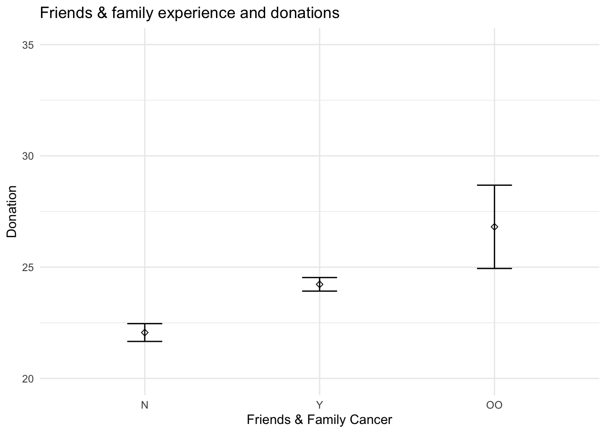
model_ffcancer_base = lm(update(base.formula, donation ~ . - ff_cancer), data = trials)
model_ffcancer_full = lm(update(base.formula, donation ~ .), data = trials)
compare_lm(model_ffcancer_base, model_ffcancer_full)## Analysis of Variance Table
##
## Model 1: donation ~ cond_sex + self_cancer + gender + education + socioeconomic +
## past_donations.z + age.z
## Model 2: donation ~ cond_sex + self_cancer + ff_cancer + gender + education +
## socioeconomic + past_donations.z + age.z
## Res.Df RSS Df Sum of Sq Pr(>Chi)
## 1 4479 1149384
## 2 4477 1145461 2 3922.5 0.0004687 ***
## ---
## Signif. codes: 0 '***' 0.001 '**' 0.01 '*' 0.05 '.' 0.1 ' ' 1
## Chisq Stat: 15.39
## NULL
## MODEL INFO:
## Observations: 4502
## Dependent Variable: donation
## Type: OLS linear regression
##
## MODEL FIT:
## F(24,4477) = 5.265, p = 0.000
## R² = 0.027
## Adj. R² = 0.022
##
## Standard errors: OLS
## ------------------------------------------------------------------------
## Est. 2.5% 97.5% t val. p
## --------------------------- -------- --------- -------- -------- -------
## (Intercept) 23.917 17.527 30.308 7.337 0.000
## cond_sexfemale -0.527 -1.465 0.411 -1.101 0.271
## self_cancerY 4.330 2.026 6.634 3.684 0.000
## self_cancerOO 5.320 0.341 10.299 2.095 0.036
## ff_cancerY 1.844 0.828 2.860 3.558 0.000
## ff_cancerOO 4.157 0.519 7.794 2.240 0.025
## genderF 0.955 -0.004 1.915 1.953 0.051
## genderNB 2.190 -4.144 8.523 0.678 0.498
## genderOO -3.082 -12.774 6.609 -0.624 0.533
## educationHS -3.547 -9.920 2.826 -1.091 0.275
## educationA -3.540 -10.000 2.920 -1.074 0.283
## educationB -2.305 -8.664 4.053 -0.711 0.477
## educationM -0.493 -6.951 5.964 -0.150 0.881
## educationP -1.982 -8.936 4.971 -0.559 0.576
## educationD -3.359 -10.549 3.831 -0.916 0.360
## educationOO -4.138 -14.119 5.843 -0.813 0.416
## socioeconomic10-25k -0.824 -2.607 0.960 -0.905 0.365
## socioeconomic25-50k 0.202 -1.419 1.822 0.244 0.807
## socioeconomic50-75k 0.956 -0.767 2.679 1.087 0.277
## socioeconomic75-100k 1.976 -0.001 3.953 1.960 0.050
## socioeconomic100-150k 0.876 -1.397 3.148 0.755 0.450
## socioeconomic>150k 1.490 -1.683 4.662 0.921 0.357
## socioeconomicOO -2.373 -5.613 0.868 -1.436 0.151
## past_donations.z 2.622 1.669 3.576 5.393 0.000
## age.z -0.468 -1.457 0.520 -0.929 0.353
## ------------------------------------------------------------------------Past friends & family experience with cancer significantly predicts donation behavior (Chisq = 7.7, p < 0.001).
# b = trials %>%
# filter(self_cancer != "OO") %>%
# ggplot(aes(self_cancer, donation)) + ptheme +
# stat_summary(fun.data = mean_se, geom = "errorbar", width = 0.2) +
# stat_summary(fun.data = mean_se, geom = "point", shape = 5) +
# scale_x_discrete(labels = c("N" = "Have not been\ntreated", "Y" = "Have been treated")) +
# labs(x = element_blank(), y = "Donation", title = "Self has had Cancer Treatment\nand Donations") +
# scale_y_continuous(labels = scales::dollar) +
# coord_cartesian(ylim = c(20, 32)) +
# geom_signif(comparisons = list(c("N", "Y")),
# textsize = 2.75,
# y_position = 31,
# tip_length = c(0.05, 0.01),
# annotations = "list({\U03C7^2}(2) == 17.8, ~~ p < 0.001)",
# parse = T)# g = grid.arrange(a, b, nrow = 1)
# ggsave("covariates.png", g, width = pwidth, height = pheight, bg = "transparent")5.6 Education
NH: Education level has no linear correlation with donation amount
trials %>%
filter(education != "OO") %>%
mutate(education_order = ordered(education)) %>%
ggplot(aes(education_order, donation)) + itheme +
geom_errorbars +
labs(x = "Education", y = "Donation", title = "Education and donations") +
coord_cartesian(ylim = c(20, 30))model_education_base = lm(update(base.formula, donation ~ . - education),
data = trials %>%
filter(education != "OO") %>%
mutate(education = ordered(education)))
model_education_full = lm(update(base.formula, donation ~ .),
data = trials %>%
filter(education != "OO") %>%
mutate(education = ordered(education)))
compare_lm(model_education_base, model_education_full)## Analysis of Variance Table
##
## Model 1: donation ~ cond_sex + self_cancer + ff_cancer + gender + socioeconomic +
## past_donations.z + age.z
## Model 2: donation ~ cond_sex + self_cancer + ff_cancer + gender + education +
## socioeconomic + past_donations.z + age.z
## Res.Df RSS Df Sum of Sq Pr(>Chi)
## 1 4465 1145247
## 2 4459 1141139 6 4107.7 0.01348 *
## ---
## Signif. codes: 0 '***' 0.001 '**' 0.01 '*' 0.05 '.' 0.1 ' ' 1
## Chisq Stat: 16.108
## NULL
## MODEL INFO:
## Observations: 4483
## Dependent Variable: donation
## Type: OLS linear regression
##
## MODEL FIT:
## F(23,4459) = 5.349, p = 0.000
## R² = 0.027
## Adj. R² = 0.022
##
## Standard errors: OLS
## ------------------------------------------------------------------------
## Est. 2.5% 97.5% t val. p
## --------------------------- -------- --------- -------- -------- -------
## (Intercept) 21.644 19.721 23.567 22.065 0.000
## cond_sexfemale -0.538 -1.478 0.402 -1.121 0.262
## self_cancerY 4.335 2.030 6.640 3.687 0.000
## self_cancerOO 5.488 0.503 10.473 2.158 0.031
## ff_cancerY 1.862 0.844 2.880 3.586 0.000
## ff_cancerOO 3.673 -0.026 7.372 1.946 0.052
## genderF 0.958 -0.003 1.919 1.955 0.051
## genderNB 2.233 -4.101 8.568 0.691 0.489
## genderOO -1.479 -13.445 10.487 -0.242 0.809
## education.L -0.773 -5.067 3.521 -0.353 0.724
## education.Q 0.514 -3.448 4.476 0.254 0.799
## education.C -3.267 -6.526 -0.009 -1.966 0.049
## education^4 0.866 -1.587 3.319 0.692 0.489
## education^5 0.601 -1.236 2.438 0.641 0.522
## education^6 0.507 -0.703 1.718 0.822 0.411
## socioeconomic10-25k -0.703 -2.491 1.085 -0.771 0.441
## socioeconomic25-50k 0.292 -1.333 1.916 0.352 0.725
## socioeconomic50-75k 1.060 -0.668 2.787 1.203 0.229
## socioeconomic75-100k 2.080 0.099 4.060 2.059 0.040
## socioeconomic100-150k 0.976 -1.300 3.252 0.841 0.401
## socioeconomic>150k 1.587 -1.588 4.762 0.980 0.327
## socioeconomicOO -1.741 -5.052 1.571 -1.031 0.303
## past_donations.z 2.651 1.696 3.606 5.443 0.000
## age.z -0.502 -1.493 0.489 -0.993 0.321
## ------------------------------------------------------------------------There is not signficant evidence that donation behavior is related to socioeconomic status. However, there is a marginally significant linear predictor through the ordered predictor for socioeconomic status (t = 1.665, p < 0.1).
5.7 Socioeconomics
NH: Socioeconomic status has no linear correlation with donation amount
trials %>%
filter(socioeconomic != "OO") %>%
mutate(socioeconomic_order = ordered(socioeconomic)) %>%
ggplot(aes(socioeconomic_order, donation)) + itheme +
geom_errorbars +
labs(x = "Socioeconomics", y = "Donation", title = "Socioeconomic and donations") +
coord_cartesian(ylim = c(20, 30))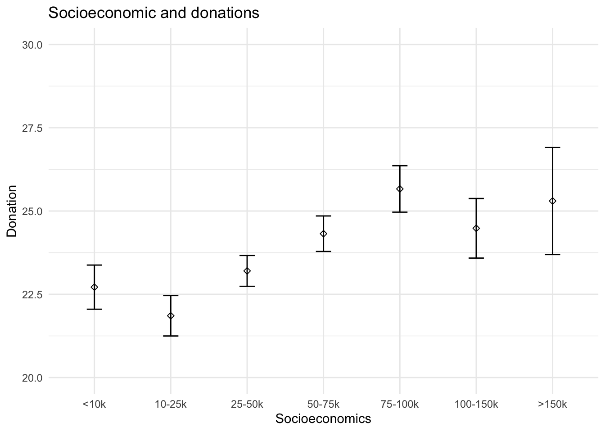
model_socioeconomic_base = lm(update(base.formula, donation ~ . - socioeconomic),
data = trials %>%
filter(socioeconomic != "OO") %>%
mutate(socioeconomic = ordered(socioeconomic)))
model_socioeconomic_full = lm(update(base.formula, donation ~ .),
data = trials %>%
filter(socioeconomic != "OO") %>%
mutate(socioeconomic = ordered(socioeconomic)))
compare_lm(model_socioeconomic_base, model_socioeconomic_full)## Analysis of Variance Table
##
## Model 1: donation ~ cond_sex + self_cancer + ff_cancer + gender + education +
## past_donations.z + age.z
## Model 2: donation ~ cond_sex + self_cancer + ff_cancer + gender + education +
## socioeconomic + past_donations.z + age.z
## Res.Df RSS Df Sum of Sq Pr(>Chi)
## 1 4365 1118223
## 2 4359 1115784 6 2439.2 0.1459
## Chisq Stat: 9.571
## NULLThere is not signficant evidence that donation behavior is related to socioeconomic status. However, there is a marginally significant linear predictor through the ordered predictor for socioeconomic status (t = 1.665, p < 0.1).
5.8 Past Donations
NH: Participants with no history of charitable behavior have the same donation behavior as those with a history of charitable behavior
trials %>%
ggplot(aes(past_donations, donation)) + itheme +
geom_point(alpha = 0.1) +
geom_smooth(method = "lm") +
labs(x = "Past Donations", y = "Donation", title = "Past Donations and Donations")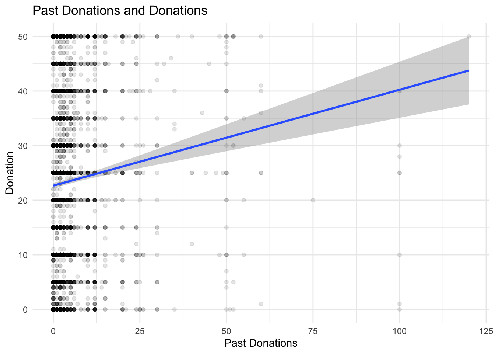
model_pastdonations_base = lm(update(base.formula, donation ~ . - past_donations.z), data = trials)
model_pastdonations_full = lm(update(base.formula, donation ~ .), data = trials)
compare_lm(model_pastdonations_base, model_pastdonations_full)## Analysis of Variance Table
##
## Model 1: donation ~ cond_sex + self_cancer + ff_cancer + gender + education +
## socioeconomic + age.z
## Model 2: donation ~ cond_sex + self_cancer + ff_cancer + gender + education +
## socioeconomic + past_donations.z + age.z
## Res.Df RSS Df Sum of Sq Pr(>Chi)
## 1 4478 1152901
## 2 4477 1145461 1 7440.3 6.945e-08 ***
## ---
## Signif. codes: 0 '***' 0.001 '**' 0.01 '*' 0.05 '.' 0.1 ' ' 1
## Chisq Stat: 29.148
## NULL
## MODEL INFO:
## Observations: 4502
## Dependent Variable: donation
## Type: OLS linear regression
##
## MODEL FIT:
## F(24,4477) = 5.265, p = 0.000
## R² = 0.027
## Adj. R² = 0.022
##
## Standard errors: OLS
## ------------------------------------------------------------------------
## Est. 2.5% 97.5% t val. p
## --------------------------- -------- --------- -------- -------- -------
## (Intercept) 23.917 17.527 30.308 7.337 0.000
## cond_sexfemale -0.527 -1.465 0.411 -1.101 0.271
## self_cancerY 4.330 2.026 6.634 3.684 0.000
## self_cancerOO 5.320 0.341 10.299 2.095 0.036
## ff_cancerY 1.844 0.828 2.860 3.558 0.000
## ff_cancerOO 4.157 0.519 7.794 2.240 0.025
## genderF 0.955 -0.004 1.915 1.953 0.051
## genderNB 2.190 -4.144 8.523 0.678 0.498
## genderOO -3.082 -12.774 6.609 -0.624 0.533
## educationHS -3.547 -9.920 2.826 -1.091 0.275
## educationA -3.540 -10.000 2.920 -1.074 0.283
## educationB -2.305 -8.664 4.053 -0.711 0.477
## educationM -0.493 -6.951 5.964 -0.150 0.881
## educationP -1.982 -8.936 4.971 -0.559 0.576
## educationD -3.359 -10.549 3.831 -0.916 0.360
## educationOO -4.138 -14.119 5.843 -0.813 0.416
## socioeconomic10-25k -0.824 -2.607 0.960 -0.905 0.365
## socioeconomic25-50k 0.202 -1.419 1.822 0.244 0.807
## socioeconomic50-75k 0.956 -0.767 2.679 1.087 0.277
## socioeconomic75-100k 1.976 -0.001 3.953 1.960 0.050
## socioeconomic100-150k 0.876 -1.397 3.148 0.755 0.450
## socioeconomic>150k 1.490 -1.683 4.662 0.921 0.357
## socioeconomicOO -2.373 -5.613 0.868 -1.436 0.151
## past_donations.z 2.622 1.669 3.576 5.393 0.000
## age.z -0.468 -1.457 0.520 -0.929 0.353
## ------------------------------------------------------------------------5.9 Age
ggplot(trials, aes(age, donation)) + itheme +
geom_point(alpha = 0.1) +
geom_smooth(method = "lm", formula = y ~ poly(x, 2))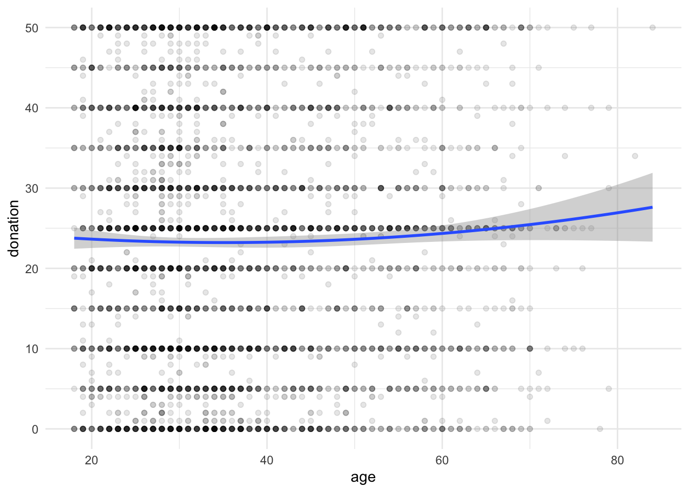
model_age_base = lm(update(base.formula, donation ~ . - age.z),
data = trials)
model_age_mid = lm(update(base.formula, donation ~ .),
data = trials)
model_age_full = lm(update(base.formula, donation ~ . + I(age.z^2)),
data = trials)
compare_lm(model_age_base, model_age_mid)## Analysis of Variance Table
##
## Model 1: donation ~ cond_sex + self_cancer + ff_cancer + gender + education +
## socioeconomic + past_donations.z
## Model 2: donation ~ cond_sex + self_cancer + ff_cancer + gender + education +
## socioeconomic + past_donations.z + age.z
## Res.Df RSS Df Sum of Sq Pr(>Chi)
## 1 4478 1145682
## 2 4477 1145461 1 220.78 0.3529
## Chisq Stat: 0.868
## NULLcompare_lm(model_age_mid, model_age_full)## Analysis of Variance Table
##
## Model 1: donation ~ cond_sex + self_cancer + ff_cancer + gender + education +
## socioeconomic + past_donations.z + age.z
## Model 2: donation ~ cond_sex + self_cancer + ff_cancer + gender + education +
## socioeconomic + past_donations.z + age.z + I(age.z^2)
## Res.Df RSS Df Sum of Sq Pr(>Chi)
## 1 4477 1145461
## 2 4476 1143274 1 2187.2 0.00343 **
## ---
## Signif. codes: 0 '***' 0.001 '**' 0.01 '*' 0.05 '.' 0.1 ' ' 1
## Chisq Stat: 8.605
## NULL
## MODEL INFO:
## Observations: 4502
## Dependent Variable: donation
## Type: OLS linear regression
##
## MODEL FIT:
## F(25,4476) = 5.406, p = 0.000
## R² = 0.029
## Adj. R² = 0.024
##
## Standard errors: OLS
## ------------------------------------------------------------------------
## Est. 2.5% 97.5% t val. p
## --------------------------- -------- --------- -------- -------- -------
## (Intercept) 22.965 16.547 29.382 7.016 0.000
## cond_sexfemale -0.508 -1.445 0.429 -1.063 0.288
## self_cancerY 4.268 1.965 6.571 3.634 0.000
## self_cancerOO 5.411 0.436 10.387 2.132 0.033
## ff_cancerY 1.854 0.839 2.869 3.581 0.000
## ff_cancerOO 4.255 0.620 7.890 2.295 0.022
## genderF 0.951 -0.008 1.909 1.944 0.052
## genderNB 2.314 -4.014 8.643 0.717 0.473
## genderOO -3.153 -12.837 6.530 -0.638 0.523
## educationHS -3.671 -10.039 2.697 -1.130 0.258
## educationA -3.531 -9.985 2.924 -1.072 0.284
## educationB -2.259 -8.612 4.094 -0.697 0.486
## educationM -0.409 -6.862 6.043 -0.124 0.901
## educationP -1.999 -8.947 4.949 -0.564 0.573
## educationD -3.403 -10.587 3.781 -0.929 0.353
## educationOO -4.023 -13.996 5.950 -0.791 0.429
## socioeconomic10-25k -0.693 -2.477 1.091 -0.762 0.446
## socioeconomic25-50k 0.504 -1.128 2.136 0.606 0.545
## socioeconomic50-75k 1.339 -0.401 3.080 1.509 0.131
## socioeconomic75-100k 2.387 0.393 4.382 2.346 0.019
## socioeconomic100-150k 1.418 -0.882 3.718 1.209 0.227
## socioeconomic>150k 1.951 -1.234 5.135 1.201 0.230
## socioeconomicOO -2.227 -5.466 1.012 -1.348 0.178
## past_donations.z 2.643 1.690 3.595 5.438 0.000
## age.z -1.567 -2.799 -0.335 -2.494 0.013
## I(age.z^2) 2.597 0.857 4.337 2.926 0.003
## ------------------------------------------------------------------------